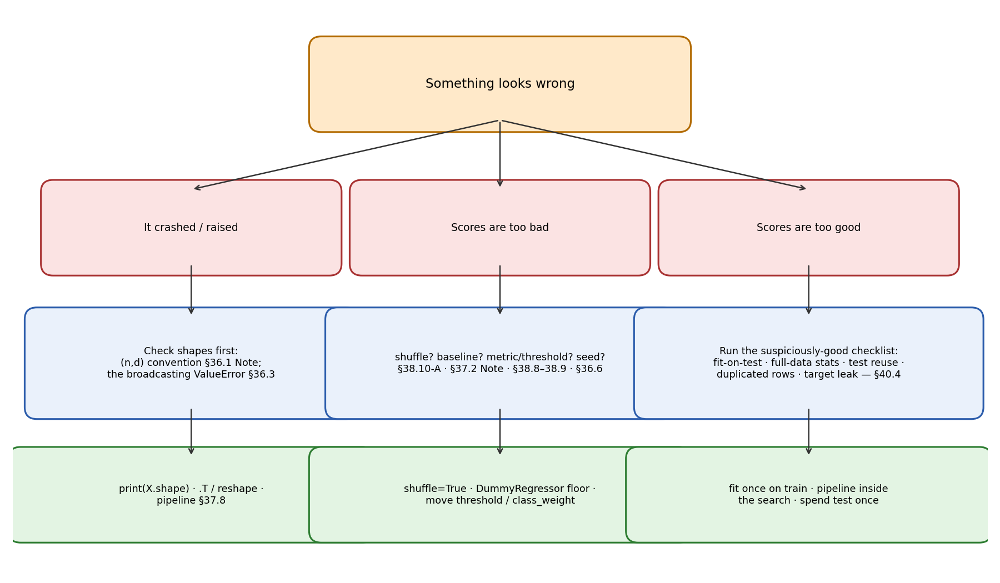

Chapter 40: End-to-end model training and debugging
Everything in §40.1 comes from the MLP Week-1 Lecture 1–5 deck, “End to end Machine Learning Project” (the wine-quality project — the course’s own canonical workflow, from problem framing to launch); §§40.2–40.4 replay the debugging cases already built in Chapters 36–39, plus one new catch found by re-reading the deck itself (§40.2’s case 5). This is the last chapter of Part V, and it is a synthesis: the runbook is the course’s, and the playbook below it is the book’s — assembled from the chapters’ own experiments, not from the course slides.
A word on what was actually run. The position is the same as Chapters 37–39: sklearn is not installed on this machine, so no sklearn call below was executed here. Deck code and numbers are transcribed from the slides — verbatim unless a slide typo forced a fix (each fix is logged in reviews/40-end-to-end-debugging.md). Every number beside the code is either [recorded] — printed as output in the course material itself — or [verified] — worked by hand in this session from definitions (confusion-matrix arithmetic, grid-size counting, index sets). numpy is installed, so every numpy-only check was re-run and is marked [verified-NumPy]. The boundary matters more than usual in this chapter: the taxonomy, the checklists, and every “the book’s” label are the book’s synthesis; the cases, code, and numbers are the course’s or the earlier chapters’.
Notation. \(X \in \mathbb{R}^{n \times d}\) as usual (\(n\) points, \(d\) features, points as rows — the book’s \((n, d)\), §36.1).
40.1 The end-to-end runbook: the course’s eight steps
The deck opens with eight steps and then walks a wine-quality project through every one of them. As a runbook, with the book’s chapters doing each step’s machinery:
i) Look at the big picture. Frame the problem: “What is input and output? What is the business objective? … Is this a classification, regression or some other task?” Then select the performance measure — the deck’s menu: regression → MSE or MAE (§37.5’s shelf); classification → precision, recall, F1-score, accuracy (§38.8–38.9’s ledger). Then the deck’s underlined rule: “List down various assumptions about the task. Review with domain experts … Make sure all assumptions are reviewed and approved before coding!” (exclamation mark in the original). Debugging lesson zero lives here: a metric chosen after seeing results is a metric chosen to flatter.
ii) Get the data. “It’s a good practice to create a function for downloading and extracting the data.” The deck’s wine flow: pd.read_csv(data_url, sep=";") → 1599 rows, 12 columns — 11 features + label quality, quality \(\in [3, 8]\) [recorded] (§36.7’s verified re-run).
iii) Discover and visualize. head(), info(), describe(), value_counts() (“lots of samples of average wines” — qualities 5 and 6 dominate), histograms, corr() (“only captures linear relationship”), heatmaps, scatter matrices. The deck’s two discipline lines: “Before any further exploration, it’s a good idea to separate test set and do not look at it in order to have a clean evaluation set” — because “when we look at the test set, we are likely to notice patterns in that and based on that we may select certain models. This leads to biased estimation on test set … This is called data snooping bias.” And the deck’s humility note: “Visualization and data exploration do not have to be absolutely thorough … Exploration is an iterative process: Once we build model and obtain more insights, we can come back to this step.” (§36.6’s seeded split; §39.6’s spend-once doctrine.)
iv) Prepare the data. “It’s a good practice to make a copy of the data and apply preprocessing on that copy. This ensures that in case something goes wrong, we will at least have original copy of the data intact.” The deck’s four moves: separate features and labels; handle missing values and outliers (isna().sum(); impute — SimpleImputer(strategy="median") learning the medians \([7.9, 0.52, 0.26, \dots, 10.2]\) on the training features [recorded]; drop; or keep-as-NaN when the value can’t exist — §36.7’s discipline); scale features (“Most ML algorithms do not perform well when input features are on very different scales” — “Scaling of target label is generally not required”); transforms (log, square root). Then the deck’s slide-57 law, the sentence this whole part of the book is built on: “Note that all these transformers are learnt on the training data and then applied on the training and test data to transform them. Never learn these transformers on the full dataset.” (§37.8’s machinery exists to make this structural.)
v) Select and train — baseline first. “It’s a good practice to build a quick baseline model on the preprocessed data and get an idea about model performance.” The deck’s baseline: LinearRegression() → train MSE \(0.4207\), test MSE \(0.3976\) [recorded]. Then the deck’s cautionary tale — DecisionTreeRegressor(): train MSE \(0.0\), test MSE \(0.5813\) [recorded] — “Note that the training error is \(0\), while the test error is \(0.58\). This is an example of an overfitted model.” (§23.9 on paper; §39.4 as code.) Then robust comparison: cross_val_score(..., scoring="neg_mean_squared_error", cv=10) — linear regression \(0.4316 \pm 0.0836\) [recorded]; decision tree \(0.6852 \pm 0.1667\) [recorded]; random forest \(0.3457 \pm 0.0736\) [recorded] — “LinReg has better MSE and more precise estimation compared to DT.” (The deck’s verdict, printed under the numbers.)
vi) Fine-tune. GridSearchCV(forest_reg, param_grid, cv=5, scoring='neg_mean_squared_error', return_train_score=True) over \(18\) combinations (\(12 + 6\), two grids) \(\times\) \(5\) folds \(= 90\) fits [recorded arithmetic]; best_params_ \(\to\) {'max_features': 6, 'n_estimators': 30} [recorded]; “GridSearchCV is initialized with refit=True option, which retrains the best estimator on the full training set.” Big spaces: RandomizedSearchCV — “enables us to search hyperparameter space with appropriate budget control.” (§39.6–39.7; the \(18 \times 5 = 90\) count is the deck’s own.) Then the deck’s debugging-adjacent line, quoted whole because it is the motto of §40.2: “It is also useful to analyze the errors in prediction and understand its causes and fix them” — plus feature_importances_, “based on this information, we may drop features that are not so important.”
vii) Evaluate once, then present. The test set, spent exactly once (§39.6’s doctrine): transform the test features, predict, one metric — test MSE \(0.3535\) [recorded] — and the deck’s honest extra: “It’s a good idea to get 95% confidence interval of the evaluation metric,” \((0.2916, 0.4153)\) [recorded] via stats.t.interval. Then present: “highlights learnings, assumptions and systems limitation. Document everything, create clear visualizations.”
viii) Launch, monitor, maintain. The deck’s three words: Launch — “Plug in input sources and write test cases”; Monitoring — “system outages, degradation of model performance, sampling predictions for human evaluation, regular assessment of data quality, which is critical for model performance”; Maintenance — “train model regularly every fixed interval with fresh data.” The runbook doesn’t end at the test score; it ends when the model is serving and someone is watching it.
The deck’s framing line, worth keeping above the whole runbook: “ML is usually a small piece in a big project… Typically 10-15% of time is spent on ML. A lot more time is spent on capturing and processing data needed for ML and taking decisions based on output of ML module.”
eg 1 (the runbook on one line each). The §36.8 house table through the deck’s steps: (i) big picture — regression, price in dollars, metric MAE; (ii) get — the inline CSV; (iii) explore — describe(), rooms \(=\) NaN in row 9 (§36.8); (iv) prepare — median-impute rooms on the train rows only; (v) baseline — DummyRegressor(strategy="mean") floor first, then LinearRegression (§37.4, \(R^2 = 0.9619\) [verified-NumPy]); (vi) tune — none needed at \(n = 10\); (vii) evaluate once — on the §36.6 seeded split’s test rows; (viii) launch — \(n/a\), it’s ten houses. Every step already done somewhere in Chapters 36–39; this chapter is the index.
Basically, … “The course’s end-to-end project is eight steps in one sentence: frame it, fetch it, look at it, clean it, baseline it, tune it, grade it once, ship it and watch it. The middle six steps are Chapters 36–39; this chapter is the checklist that keeps them in order — and the rest of the chapter is what to check when a step’s output looks wrong.”

40.2 The debugging playbook: symptom → diagnosis → fix
Every case below is one the book has already met — the course’s own experiments, or the deck itself. Same shape each time: the symptom (what the screen shows), the diagnosis (what’s actually wrong), the fix.
Case 1 — the shape/convention bug. Symptom: ValueError at fit or predict, or — worse — code that runs and silently computes garbage. Diagnosis: the \((d, n)\) habit (§36.1’s Note) fed where the \((n, d)\) convention is expected, or an axis collapse read backwards (§36.4’s collapse rule). Fix: print(X.shape) first, always — in (60000, 28, 28) the first axis is the sample axis; convert with .T or reshape the moment the sample axis isn’t first. §36.3’s rule of thumb: “That error is your friend — it means you mixed up the \((n, d)\) convention.” The cheapest bug to find and the most common one to make.
eg 2 (the broadcast that tells on you) [verified-NumPy]. Mean-centering with a transposed mean:
X = np.arange(6).reshape(3, 2) # (3, 2): 3 points, 2 features
mu = X.mean(axis=0) # (2,) per-feature means: [2., 3.]
X - mu # (3,2)-(2,) -> fine: mu stretched down the rows
X - mu[:, np.newaxis] # (2,1) against (3,2) -> ValueError: shapes (3,2) and (2,1) not alignedThe (2,1) column form broadcasts against the first axis and dies; the flat (2,) form aligns on the trailing axis and works. If the subtraction had silently succeeded with the wrong alignment, every downstream number would be nonsense — the ValueError is the good outcome.
Case 2 — the shuffle disaster (§38.10, Experiment A). Symptom: accuracy \(0.5486\), precision \(1.0000\), recall \(0.0703\) [recorded] — the confusion matrix \((TN, FP, FN, TP) = (196, 0, 172, 13)\) [recorded]: the perceptron predicts \(-1\) for nearly everything. Diagnosis: shuffle=False with training rows stacked \(+1\)s-then-\(-1\)s; SGD “estimates the gradient with one sample at a time” (§38.6), so 863 fives drag the weights deep into five-territory before 1032 threes arrive, and it never recovers. Fix: shuffle the training data before fitting — the default, and the slide’s rule, “not hygiene, it is load-bearing.”
Case 3 — the PCA double-fit leak (§38.10, Experiment B). Symptom: ten PCA components, perceptron, accuracy \(0.5564\) — barely above coin-flip [recorded]. Diagnosis: the solution’s first attempt ran pca.fit(x_train1) and pca.fit(x_test1) — test statistics learned into the projection, and train and test projected onto different bases. Fix: fit once, on train only (p.transform(x_test1)) — or, structurally, make_pipeline(pca, clf) so the leak is un-writable (§37.8’s Note). The corrected run: accuracy \(0.9213\) [verified] — the leak had cost 36 points.
Case 4 — scale-outside-CV (§39.9). Symptom: CV numbers that look a shade rosier than the honest pipeline — nothing crashes, nothing screams. Diagnosis: the scaler (or imputer, or PCA) was fit outside the fold loop, so every fold’s “training” statistics already saw the validation rows. Fix: put the whole pipeline inside GridSearchCV; the grid addresses steps with poly__degree-style double underscores (§37.8), and every fold refits every learning step on its own rows.
Case 5 — the deck’s own slip (found by re-reading). Symptom: none visible — the numbers print fine. Diagnosis: the wine deck’s own test-evaluation snippet, in both places it evaluates the test set, calls transform_pipeline.fit_transform(wine_features_test) — refitting the imputer medians and the scaler’s \(\mu, \sigma\) on the test rows, in direct violation of the deck’s own slide-57 law (“Never learn these transformers on the full dataset,” §40.1-iv). Fix: one method call — .transform(wine_features_test), the statistics learned on train replayed on test. The book’s catch, logged in the review; the course’s numbers are kept as [recorded] regardless.
Case 6 — the no-baseline trap (§37.2’s Note, §39.1). Symptom: “\(R^2 = 0.05\) — is that good?” Diagnosis: no floor was ever built, so the question is unanswerable. Fix: DummyRegressor(strategy="mean") first — a constant predictor scores exactly \(0.0\) (§37.5’s second landmark), so anything above zero is learning and anything at-or-below is noise. §39.1’s discipline: beat the dummy first, then tune.
Case 7 — the wrong metric / threshold (§38.8–38.9). Symptom: accuracy \(99\%\), model useless — the classic rare-class story (a disease classifier that never predicts disease). Diagnosis: the metric doesn’t match the job (§40.1-i’s “select the performance measure” — skipped or chosen late). Fix: read the confusion matrix (§38.8’s ledger: precision = purity of the alarms, recall = completeness of the net), move the threshold at prediction time (free, no retraining — §38.9’s second lever), or penalize rare-class mistakes at training time with class_weight (§38.5’s first lever). Multiclass: pick the average= (§38.9) that matches the question — macro gives rare classes an equal vote.
Case 8 — the silent seed (§36.6, §39.2’s Note). Symptom: the numbers change every run; a colleague can’t reproduce your split. Diagnosis: no seed was set — or worse, a seed was set where it does nothing: the slide’s KFold(n_splits=5, random_state=42) never sets shuffle=True, so random_state is silently inert (logged in §39’s review). Fix: seed deliberately (random_state=42, np.random.seed), and verify the flag actually takes effect — reproducibility is §36.6’s “controlled substance.”
Note (the seed that resets itself). The deck’s own split_train_test calls np.random.seed(42) inside the function body — so every call replays the identical permutation for same-length data (§36.6’s problem 6-ii). Fine for “same test set every run”; a trap the moment you expect two calls to give two different splits. Seed once, at the top, outside the function.
Case 9 — the mis-sized search (§39.7). Symptom: sklearn prints, verbatim [recorded]:
UserWarning: The total space of parameters 8 is smaller than n_iter=10.
Running 8 iterations. For exhaustive searches, use GridSearchCV.Diagnosis: RandomizedSearchCV on a tiny discrete space (\(2 \times 4 = 8\) combos) degenerates into grid search. Fix: grid for small/exhaustive spaces, random sampling for large or continuous ones — “with appropriate budget control” is the deck’s phrase, and the warning is the instrument telling you the budget was spent wrong.
Basically, … “Nine cases, one pattern: the pipeline looked right and the numbers lied. Shapes lie silently (case 1) or loudly (the ValueError — take the loud one). Order lies to SGD (case 2). fit lies to the test set (cases 3, 4, 5 — all the same disease: something learned where it should only have applied). Metrics lie by answering the wrong question (cases 6, 7). Randomness lies by not repeating (case 8). And the search lies by warning you in plain English while you scroll past it (case 9).”
40.3 Reading the instruments
The numbers the workflow prints are a dashboard. What each reading means, in the book’s vocabulary:
i) Negative \(R^2\). §37.5’s third landmark: the model is worse than predicting the mean — “the model can be arbitrarily worse.” Not “a bit off” — a sign error in the pipeline, a target leaked wrong, or a model fit on nonsense. Don’t tune it; debug it (start at case 1).
ii) Train error tiny, test error large. §23.9’s overfitting signature, in the deck’s own numbers: the tree’s train MSE \(0.0\) vs test \(0.5813\) [recorded] — “This is an example of an overfitted model.” (§39.4’s learning-curve version: the gap.)
iii) Both errors high and flat. Underfit — the model can’t express the pattern; more data won’t help (§39.4’s first reading). Change the model: features, capacity, less regularization.
iv) The gap that won’t close. Overfit that needs the model changed, not the data (§39.4’s third reading) — and note §38.10’s Experiment C cuts the other way: regularization is not fairy dust; on the PCA-compressed digits, L2 cost 17 points of accuracy (\(0.9213 \to 0.7480\) [recorded]) and even L1 cost 5. So “the gap won’t close” has two possible prescriptions — more capacity or less regularization — and the book’s honest answer is: that’s what the validation set (§39.6) is for.
v) fit_time exploding in cross_validate. The deck’s own arithmetic: \(18\) combos \(\times\) \(5\) folds \(= 90\) fits. If each fit is minutes, the search is days — shrink the grid, sample the space (§39.7), or reach for the *CV estimators’ efficient paths (§39.8).
eg 3 (three dashboards, read aloud). (a) learning_curve prints train error \(0.02\), CV error \(0.61\), and the CV curve is still falling at the largest \(n\) → overfit that data can cure: buy rows. (b) Train error \(0.80\), CV error \(0.82\), both flat from \(n = 200\) to \(n = 2000\) → underfit: buy capacity (§39.4’s readings, applied). (c) Test accuracy \(1.0000\) on the first run → don’t celebrate; run §40.4.
Basically, … “The dashboard speaks in four sentences: negative \(R^2\) = something is broken, not untuned. Train tiny, test huge = memorizing (the deck’s tree). Both high and flat = too simple. A gap that won’t close = change the model — but remember the digits: sometimes the fix is less regularization, not more. And perfect = suspicious, always.”
40.4 The “suspiciously good” checklist (the book’s)
When a score lands near perfection — accuracy \(1.0\), error \(\approx 0\) — on the first serious run, the book’s checklist, in suspicion order. (This is the book’s synthesis, not the course’s: the course supplies the cases, the checklist is the assembly.)
i) Was something fit on the test set? The PCA double-fit (§38.10-B) is the canonical form: any transformer or imputer that learned statistics from test rows. Grep for fit on anything named test.
ii) Were statistics learned on the full dataset? §37.8’s Note, §36.7’s imputation rule, the deck’s slide-57 law: scaler \(\mu/\sigma\), imputer medians, PCA bases — if any were computed before the split (or outside the fold loop, §39.9), test information is in the training statistics. The pipeline is the structural fix; the checklist is the audit.
iii) Was the test set spent more than once? §39.6’s doctrine: tuning on test, then reporting on the same test, is selection bias wearing a lab coat. Retrain-on-train+validation is fine; choosing anything on the test set is not.
iv) Are there duplicated rows across the split? The course never names this one, so the book flags it as its own addition: near-duplicate rows (same sensor reading logged twice, a template repeated) put the same information in train and test, and the test score measures memorization. df.duplicated().sum() before the split is the two-second check.
v) Is a feature secretly the label? Target leakage in its plainest form: a column that is the answer (or is computed from it — a “days until default” column in a default-prediction task). The deck’s Step-1 discipline (“list the assumptions… approved before coding”) is the prevention; the checklist is the autopsy.
Basically, … “Perfect scores are guilty until proven innocent. The five suspects: fit on test, statistics from the full dataset, the test set spent twice, duplicated rows, a feature that is the label. Check them in order, and most ‘amazing’ models confess by suspect two.”
40.5 Where this goes next
i) The contract survives — including inside neural nets. GridSearchCV honors the estimator contract (§39.10), MLPClassifier/MLPRegressor honor it too (the Week-12 slide: fit(X_train, y_train), predict, predict_proba, score → \(R^2\) [recorded]) — and §37.10/§38.11 already said the perceptron of §38.4 is Chapter 41’s neuron with a sign snapped on top. So Part VI inherits this chapter whole: debugging a neural net starts with the same playbook — shapes first (the \((n, d)\) convention is load-bearing in every layer), then scale (§37.3’s scaling sermon returns with a vengeance for SGD-trained nets), then shuffle, then the leak audit.
ii) The runbook doesn’t end at the test score. The deck’s Step 8 is the last word of Part V: launch with test cases, monitor for degradation and data-quality drift, retrain on fresh data on a schedule. A model is a system with a maintenance contract, not a number.
iii) What this part built. Chapters 36–40, one sentence each: 36 turned math into arrays; 37 taught the estimator contract on regression; 38 replayed it on classification; 39 made evaluation honest; 40 is the checklist that keeps the other four honest in practice. Part VI (Chapters 41–47) builds the models this discipline will debug.
Problem set
- The eight steps. (i) List the deck’s eight end-to-end steps in order. (ii) Which step does “data snooping bias” belong to, and what causes it — quote the deck’s definition. (iii) The deck says “typically 10-15% of time is spent on ML” — in one line, where does the rest go?
- The broadcast that tells on you.
X = np.arange(6).reshape(3, 2)(eg 2). (i) Computemu = X.mean(axis=0)by hand. (ii) Give the result ofX - muand explain the broadcasting rule that makes it work. (iii) Say exactly whyX - mu[:, np.newaxis]raisesValueError, and why that error is the good outcome. - The shuffle case. §38.10-A’s confusion matrix: \((TN, FP, FN, TP) = (196, 0, 172, 13)\). (i) Verify accuracy \(0.5486\), precision \(1.0\), recall \(0.0703\) from the four counts. (ii) In two lines, explain why
shuffle=Falseproduces exactly this signature — near-perfect precision, catastrophic recall — given the stacked \(+1\)s-then-\(-1\)s training rows. (iii) Name the constructor argument and its correct value. - Spot the leak. The deck evaluates its final model with
transform_pipeline.fit_transform(wine_features_test)(case 5). (i) The pipeline was alreadyfit_transformed on the training features — say exactly whatfit_transformre-learns on the test rows. (ii) Quote the deck’s own rule this violates. (iii) Write the corrected line, and say which §37.8 discipline it restores. - Read the dashboard. (i) The deck’s decision tree: train MSE \(0.0\), test MSE \(0.5813\) [recorded]. Diagnose in §23.9’s vocabulary and quote the deck’s own verdict. (ii)
Ridgereports test \(R^2 = -0.4\). Say what this means using §37.5’s landmarks, and whether the next step is tuning or debugging. (iii) A learning curve shows train error \(0.8\), CV error \(0.82\), both flat from \(n = 200\) to \(n = 2000\). Diagnose per §39.4 and name the fix direction — data, capacity, or regularization? - Search arithmetic. (i) The deck’s grid: two parameter dicts (\(3 \times 4 = 12\) and \(2 \times 3 = 6\) combos),
cv=5. Reproduce the \(18 \times 5 = 90\) fits count. (ii) Quote sklearn’sUserWarningfrom §39.7’s Lasso search verbatim [recorded] and say what sklearn did instead of the requestedn_iter=10. (iii) In one line each: when is randomized search the better choice, and when is grid search? - Spend the test set once. (i) List §39.6’s five HPT steps in order. (ii) The deck reports its final test MSE \(0.3535\) with a 95% CI of \((0.2916, 0.4153)\) [recorded] — which step of the doctrine does the CI belong to, and what does the interval add over the point estimate? (iii)
GridSearchCV’srefit=Truedefault implements which of the five steps automatically? - Error analysis, the deck’s way. (i) Quote the deck’s error-analysis line verbatim [recorded]. (ii)
sorted(zip(feature_importances, feature_list), reverse=True)— say what decision this sorted list supports, in the deck’s words. (iii) The deck’s CV comparison: linear regression \(0.4316 \pm 0.0836\), decision tree \(0.6852 \pm 0.1667\), random forest \(0.3457 \pm 0.0736\) [recorded]. State the deck’s verdict and say which two numbers (mean and spread) it rests on. - The suspiciously-good audit. A teammate’s first serious run reports test accuracy \(1.0000\). (i) List the book’s §40.4 checklist in order. (ii) For suspects (i) and (ii), name the concrete code smell you’d grep for. (iii) The course never names suspect (iv) — say what it is and give the two-second pandas check.
Solutions
Attempt each problem first, then click a problem to reveal its worked solution.
The deck’s eight steps, in order: 1. Look at the big picture. 2. Get the data. 3. Discover and visualize the data to gain insights. 4. Prepare the data for ML algorithms. 5. Select a model and train it. 6. Fine-tune your model. 7. Present your solution. 8. Launch, monitor and maintain your system. [recorded]
Step 3 (discover/visualize). The deck’s definition: “When we look at the test set, we are likely to notice patterns in that and based on that we may select certain models. This leads to biased estimation on test set, which may not generalize well in practice. This is called data snooping bias.” [recorded] — the remedy is to separate the test set before exploring and never look at it.
“A lot more time is spent on capturing and processing data needed for ML and taking decisions based on output of ML module” — data plumbing and downstream decisions, with “strong collaboration with domain experts, product managers and eng-teams.” [recorded]
X = [[0,1],[2,3],[4,5]]; column means: \((0+2+4)/3 = 2\), \((1+3+5)/3 = 3\) →mu = [2., 3.]. [verified-NumPy]X - mu:(3,2) - (2,)— the(2,)aligns on the trailing axis and is stretched down all 3 rows:
[[0-2, 1-3], [[-2., -2.],
[2-2, 3-3], = [ 0., 0.],
[4-2, 5-3]] [ 2., 2.]][verified-NumPy]
mu[:, np.newaxis]has shape(2,1). Broadcasting(3,2)against(2,1): trailing axes \(2\) vs \(1\) → the \(1\) stretches to \(2\); next axes \(3\) vs \(2\) → neither is \(1\), so it errors:ValueError: operands could not be broadcast together with shapes (3,2) (2,1). [verified-NumPy] It is the good outcome because the alternative — a silent wrong-alignment subtraction — would poison every downstream number with no warning; theValueErrorpoints at exactly the line where the convention was mixed up (§36.3’s “that error is your friend”).
Accuracy \(= (TP+TN)/(TP+TN+FP+FN) = (13+196)/381 = 209/381 \approx 0.5486\) [verified]. Precision \(= TP/(TP+FP) = 13/(13+0) = 1.0\) [verified]. Recall \(= TP/(TP+FN) = 13/(13+172) = 13/185 \approx 0.0703\) [verified]. They match the recorded numbers to every shown digit.
With
shuffle=False, SGD sees all 863 \(+1\) rows first: the perceptron walks deep into five-territory, racking up positive predictions it believes in — then the 1032 \(-1\) rows arrive and it over-corrects, ending up predicting \(-1\) almost everywhere. The 13 rows it still calls positive are ones it is sure about (hence precision \(1.0\)), but it finds only 13 of the 185 true positives (hence recall \(0.0703\)).shuffle=Truein thePerceptronconstructor (it is the default; the course’s eg set itFalseexplicitly).
fit_transformon the test set re-learns everything the pipeline learns: theSimpleImputer’s per-feature medians and theStandardScaler’s per-feature \(\mu, \sigma\) — computed from the test rows this time.The deck’s own slide-57 law: “Note that all these transformers are learnt on the training data and then applied on the training and test data to transform them. Never learn these transformers on the full dataset.” [recorded]
wine_features_test_tr = transform_pipeline.transform(wine_features_test)— replaying the train-learned statistics on test. This restores §37.8’s discipline:fitlearns on the training set,transformapplies the learned transformation to new data; the test set only ever seestransform.
Train MSE \(0.0\), test MSE \(0.5813\): textbook overfitting — the model memorized the training rows (zero training error) and fails on fresh data. The deck’s own verdict: “Note that the training error is \(0\), while the test error is \(0.58\). This is an example of an overfitted model.” [recorded]
\(R^2 = -0.4\): §37.5’s third landmark — the model is worse than always predicting the mean (“the model can be arbitrarily worse” than the constant predictor). This is not an untuned model; it is a broken pipeline (sign error, leak, or nonsense features). Debug first — start at §40.2’s case 1 — don’t tune.
Both errors high (\(\approx 0.8\)) and flat over a \(10\times\) increase in \(n\): underfit (§39.4’s first reading) — the model class can’t express the pattern, and more data will not help. Buy capacity (more/better features, a richer model) or reduce regularization — not more data.
Grid 1: \(3\) values of
n_estimators\(\times\) \(4\) values ofmax_features\(= 12\) combos. Grid 2: \(2\) values ofn_estimators\(\times\) \(3\) values ofmax_features\(= 6\) combos. Total \(12 + 6 = 18\) combinations; withcv=5, each combination is trained \(5\) times: \(18 \times 5 = 90\) fits. [verified]The warning, verbatim [recorded]:
UserWarning: The total space of parameters 8 is smaller than n_iter=10.
Running 8 iterations. For exhaustive searches, use GridSearchCV.sklearn ran only the \(8\) existing combinations instead of the requested \(10\) samples.
- Randomized search is better on large or continuous spaces, where a fixed budget of
n_itersamples beats an exponential grid; grid search is better on small discrete spaces where exhaustive enumeration is affordable.
§39.6’s five steps: 1. Split train/validation/test. 2. Train every hyperparameter combination on train (
n_jobs=-1;error_scoreto survive bad combos). 3. Evaluate each on validation; pick the best. 4. Retrain the winner on train+validation. 5. Evaluate once on test.The CI belongs to step 5 — the final, once-spent test evaluation. The point estimate (\(0.3535\)) says where the error landed; the 95% interval \((0.2916, 0.4153)\) says how much that number could wobble on a different test draw — the same “one split is a noisy number” honesty as §39.1, quantified.
Step 4: with the default
refit=True,GridSearchCVautomatically refits the winning combination on the whole training data, sobest_estimator_is ready to predict.
“It is also useful to analyze the errors in prediction and understand its causes and fix them.” [recorded]
The sorted
(importance, feature)list ranks features by how much the forest relied on them; the deck’s decision: “Based on this information, we may drop features that are not so important.” [recorded]The deck’s verdict: “LinReg has better MSE and more precise estimation compared to DT.” [recorded] It rests on both numbers per model: the mean CV MSE (linear \(0.4316\) < tree \(0.6852\) — better) and the standard deviation (linear \(0.0836\) < tree \(0.1667\) — more precise). The forest beats both (\(0.3457 \pm 0.0736\)), which is why the deck tunes it next.
§40.4’s checklist, in order: (1) was something
fiton the test set? (2) were statistics learned on the full dataset? (3) was the test set spent more than once? (4) are there duplicated rows across the split? (5) is a feature secretly the label?Suspect (1): grep for
fit(applied to anything namedtest—pca.fit(x_test),scaler.fit_transform(X_all)before the split. Suspect (2): anyfit/fit_transformon the wholeXbeforetrain_test_split, or a transformerfitoutside the CV fold loop.Suspect (iv): near-duplicate rows leaking the same information into both train and test, so the score measures memorization, not generalization. The two-second check:
df.duplicated().sum()before the split (the book’s addition — flagged as such in the review log).